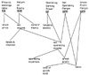

by Abraham Kandel
CRC Press, CRC Press LLC
ISBN: 084934297x Pub Date: 11/01/91
|
|
Fuzzy Expert Systems
by Abraham Kandel CRC Press, CRC Press LLC ISBN: 084934297x Pub Date: 11/01/91 |
| Previous | Table of Contents | Next |
Table 1 shows an example of the type of fuzzy reasoning used in FAULT. The rule is used repeatedly in the system to infer the qualitative value of a line item which appears in the numerator of two different ratios. Since linguistic assessments, like “rather low” or “upper medium”, refer to how quantities relate to a specific system rather than how they are represented notationally, the assessments are invariant to a logarithmic transformation. This invariance allows the rule in Table 1 to also be used to deduce an assessment for a line item which is the minuend in two subtractions whose results have been already assessed, or even to assess a line item which is the minuend in a subtraction and the numerator in a ratio. In each case, the two known results are bound to RATIO1 and RATIO2 and the deduction is returned as NUM2. Other rule structures used in FAULT are similarly versatile. This kind of multipurpose rule structure is intermediate between true frame-based processing and the table-driven rules of Pasik and Schor.8
Figure 1 shows the small network of financial ratios and line items used to validate the FAULT concept. The user examines the numeric values of the ratios (P:E, ROE, EP, OPM, and GPM) and judgmentally assigns them linguistic assessments. FAULT then uses these linguistic assessments to deduce linguistic assessments of the remaining line items.
FAULT is a single purpose program designed to analyze the particular network, given assessments of the five financial ratios (Figure 1). FLING (Fuzzy Linguistic Inference Network Generator) automates the coding and much of the analysis which was done manually in developing FAULT. Rather than being limited to a single view of a single small network of financial variables and ratios, FLING is a flexible tool for general systems modeling.
The representation of the external system which is assumed by the current version of FLING is a directed graph or network in which each node expresses a qualitative relationship among three variables: one effect variable and two cause variables — major cause variable and minor cause variable. The node is labeled with the name of the effect variable, and has exactly two incoming arcs corresponding to the two cause variables: They are either effect variables of other nodes or fundamental variables, represented by nodes with no incoming arcs. Each effect variable corresponds to a quantity or quality of the external system which depends, in a positive sense, on the major input variable and, in either a positive or negative sense, on the minor input variable. A node can have any number of outgoing arcs, depending on the number of other variables in the external system which depend on the effect variable of the node in question.
| If Ratio 1 Is Close To Ratio 2, Then Num 2 is Between Ratio 1 & Ratio 2 |

Figure 1 Example network of financial ratios and line-items.
Division and subtraction, the only relationships recognized in FAULT, are represented to FLING in a straightforward manner. The ratio, or difference, becomes the effect variable; the numerator, or minuend, becomes the major cause variable; and the denominator, or subtrahend, becomes the minor cause variable. Because of the stated invariance of linguistic evaluations under logarithmic transformations, differences and ratios are not distinguished.
Addition and multiplication present more of a problem due to the FLING inference frames assuming a balanced relation of both positive and negative elements. This problem can be eliminated by “inverting” the relation to solve for the major cause variable, which is positively related to the former effect variable and negatively related to the minor cause variable. That is, its partial correlation is negative, with the minor cause8 variable controlling for the original effect variable.
However, FLING is not limited to the purely arithmetic relations of addition, subtraction, multiplication, and division. Any dependence relation of one variable on two others can be modeled, and any dependence relation of one variable on more than two others can be disaggregated into the requisite binary form. As a result, the FLING model has considerable potential generality beyond the original finance application.
FLING can generate a rule-based program comparable to FAULT to deduce which (if any) of the variables in an arbitrary external system have values that are too high or too low based on similar assessments of a subset of these nodes. There are two inputs to FLING. The first is a description of the network to be analyzed. This description is a list of triples each of which describes one node in terms of the effect variable, the major cause variable, and the minor cause variable. This list is divided into two sublists. The first sublist contains descriptions of nodes in which the relation between the effect variable and the minor cause variable is negative. The second sublist contains descriptions of nodes in which this relation is positive. FLING converts the nodes on the second sublist into the “inverted” internal representation discussed previously and adds these nodes to the first sublist, so that FLING works internally only with nodes in which the relation is balanced, like division or subtraction, or qualitative generalizations of these.
The second input to FLING is a list of variables in the network; these are the indicator nodes whose linguistic assessments will be the inputs to the rule-based system written by FLING. Using these two input lists, FLING writes a LISP program, which contains all necessary initialization and output codes, plus a collection of fuzzy production rules similar to the one in Table 1. These rules work together in a data-driven fashion to draw all possible conclusions regarding the network from the information about the input nodes which will be given the FLING-generated program by the user. Once generated by FLING, the resultant program can be saved and used whenever the user desires to evaluate the same network with new data values, e.g., at the end of every monthly business accounting period.
Note that the nodes whose assessments will form the inputs to the program written by FLING are the indicator nodes (outputs) of the external system being modeled and analyzed. The chain of events in a financial application is as follows:
| Previous | Table of Contents | Next |
){kind=link}